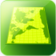
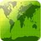
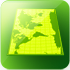
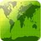

Instructions
The satellites are displayed based on their calculated positions in orbit.
Hover your cursor over a satellite to see its name. Click on a satellite to bring up details about that satellite, including links to more information about it from Science.nasa.gov and National Space Science Data Center (NSSDC).
Zoom in for a closer look at a satellite's orbit. Zoom out to see satellites in larger orbits and further distances from Earth.
Click and drag to rotate the Earth.
Click on the Globe Display icon to choose the type of map and perspective you are viewing.
By default, the NASA Science satellites are displayed. Click on the Satellite icon to view a different group of satellites or find a specific satellite.
If you shared your location with your browser a marker will indicate this position on the map.
Globe Display


 




- ID
- X Km
- Y Km
- Z Km
- Velocity
- Latitude
- Longitude
- Height
More on
Science Mission DirectorateNational Space Science Data Center